에너지관리기사 (2005-05-29 기출문제)
1과목: 연소공학
1. 석탄보일러에서 회분의 부착손상이 가장 심한 곳은?
- 과열기
- 공기예열기
- 절탄기
- 보일러 본체
(정답률: 77%)

2. 다음 연료중 발열량(kcal/㎏)이 가장 큰 것은?
- 중유
- 프로판
- 석탄
- 코크스
(정답률: 94%)
3. 11g의 프로판이 완전 연소시 몇 g의 물이 생성되는가? (단, C3H8 + 5O2 → 3CO2 + 4H2O)
- 44g
- 34g
- 28g
- 18g
(정답률: 60%)
4. 다음 중 기름연소에 사용되는 유압식 버너의 종류에 속하지 않는 것은?
- 직접분사형
- 로타리형
- 반송유형
- 플런저형
(정답률: 50%)
5. 일산화탄소 1Nm3을 연소시키는데 필요한 공기량(Nm3)은?
- 1/0.232
- 1/0.232×1/2
- 1/021
- 1/021×1/2
(정답률: 62%)
6. 기체연료의 체적 분석결과 H2가 45%, CO가 40%, CH4가 15%이다. 이 연료 1m3를 연소하는데 필요한 이론공기량은 몇 m3인가? (단, 공기중의 산소 : 질소의 체적비는 1 : 3.77이다.)
- 3.12
- 2.14
- 3.46
- 4.43
(정답률: 44%)
7. 연소장치에 따른 공기비 크기가 옳게 표시된 것은?
- 산포식 스토커 ＜ 수분 수평화격자 ＜ 이동화격자 스토커
- 수분 수평화격자 ＜ 이동화격자 스토커 ＜ 산포식 스토커
- 이동화격자 스토커 ＜ 산포식 스토커 ＜ 수분 수평화격자
- 산포식 스토커 ＜ 이동화격자 스토커 ＜ 수분 수평화격자
(정답률: 22%)
8. 대도시의 광화학 스모그(smog) 발생의 원인 물질로 문제가 되는 것은? (단, 첨자 x는 상수이다.)
- NOx
- SOx
- CO
- CO2
(정답률: 79%)
9. 저탄장 바닥의 구배와 실외에서의 탄층높이로 적절한 것은?
- 구배 1/50 ∼ 1/100, 높이 2m이하
- 구배 1/100 ∼ 1/150, 높이 4m이하
- 구배 1/150 ∼ 1/200, 높이 2m이하
- 구배 1/200 ∼ 1/250, 높이 4m이하
(정답률: 82%)
10. 코크스 고온 건류온도(℃)는?
- 500 ∼ 600℃
- 1000 ∼1200℃
- 1500 ∼ 1800℃
- 2000 ∼ 2500℃
(정답률: 60%)
11. 다음과 같은 조성의 석탄가스를 연소시켰을 때의 이론습연소가스량(Nm3/Nm3)은?
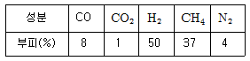
- 5.61
- 4.61
- 3.94
- 2.94
(정답률: 74%)
12. 연소부하의 감소시 조치사항으로 거리가 먼 것은?
- 연료의 품질개량
- 연소실의 구조개량
- 노상면적 축소
- 연소방식 개조
(정답률: 32%)
13. 과잉공기의 설명으로 맞는 것은?
- 불완전연소의 공기량과 완전연소의 공기량의 차
- 연소를 위해 필요한 이론공기량보다 과잉된 공기
- 완전연소를 하기 위한 공기
- 1차 공기가 부족하였을 때 더 공급해 주는 공기
(정답률: 67%)
14. 이론연소온도(tr) 식을 옳게 나타낸 것은? (단, Hℓ은 저발열량, G는 연소가스량, Q는 연소용 공기의 보유열, Cpm은 연소가스의 평균 비열)
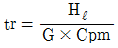
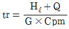
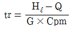
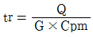
(정답률: 57%)
15. C2H6 1Nm3을 연소했을 때의 건연소가스량(m3)은? (단, 공기중의 산소는 21%이다.)
- 4.5
- 15.2
- 18.1
- 22.4
(정답률: 53%)
16. 중유의 착화온도(℃)는?
- 250 ∼ 300
- 325 ∼ 400
- 400 ∼ 440
- 530 ∼ 580
(정답률: 55%)
17. 로 또는 보일러에 사용하는 연소용 중유의 성질을 조사한 것 중 틀린 것은?
- 비중 : 일반적으로 큰 것
- 점도 : 사용지역에 적합한 것을 선택
- 인화점 : 낮은 것은 화재의 위험성이 있으므로 예열 온도보다 5℃ 정도 높은 것
- 잔류 탄소 : 많은 것을 택할 것
(정답률: 56%)
18. 메탄올 20%의 과잉공기를 사용하여 연소시켜며, 저위발열량의 30%에 해당하는 열량이 연소용 공기의 예열에 사용된다. 이론연소온도는? (단, 공기 및 습연소가스의 평균비열은 1.30kJ/Nm℃ 및 1.42kJ/Nm3℃, 공기의 유입온도는 20℃이고 g는 가스, l은 액체이다.)
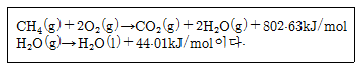
- 2659℃
- 2539℃
- 2203℃
- 2138℃
(정답률: 34%)
19. 액체연료가 증기로 변하여 확산에 의해 공기와 혼합되어불꽃 연소하는 것을 ( )라 한다. ( )안에 알맞는 것은?
- 혼합기연소
- 증발연소
- 표면연소
- 분해연소
(정답률: 56%)
20. 다음 식 중 입열 항목이 아닌 것은? (단, h21 = 과열증기엔탈피, h1 = 급수엔탈피, h2 = 분입증기의 엔탈피, ho = 외기온도에서의 증기엔탈피 ta = 공기의 온도, to = 외기온도 ts = 연료의 온도, Gw = 연료 1kg 연소시 분입 증기량, G = 연료 1kg당 증기발생량)
- G(h21 - h1)
- Cpa(ta - to)
- Cps(ts - to)
- Gw(h2 - ho)
(정답률: 50%)
2과목: 열역학
21. 다음 중 열펌프의 성능계수는?
- 고온체에서 방출한 열량과 기계적인 입력과의 비
- 저온체에서 흡수한 열량과 기계적인 입력과의 비
- 역 냉동사이클의 효율
- 저온체와 고온체의 절대 온도만의 함수
(정답률: 82%)
22. 300℃, 2기압인 공기가 탱크에 밀폐되어 대기 공기로 냉각되었다. 이 때의 탱크내 공기 엔트로피의 변화량을 △S1, 대기 공기의 엔트로피의 변화량을 △S2라 하면 엔트로피 증가의 원리를 이 경우에 해당시키면 아래 어느 것이 되는가?
- △S1 ＞ 0
- △S2 ＞ 0
- △S1 + △S2 ＞ 0
- △S1 + △S2 = 0
(정답률: 73%)
23. 공기 온도가 15℃, 대기압이 758.7㎜Hg인 때에 습도계로 공기중의 증기의 분압이 9.5㎜Hg임을 알았다. 건조공기의 밀도는 얼마인가? (단, 0℃, 760㎜Hg 때의 건조공기의 밀도는 1.293㎏/m3이다.)
- 1.02㎏/m3
- 1.21㎏/m3
- 1.40㎏/m3
- 1.61㎏/m3
(정답률: 83%)
24. 다음 중 증기선도(몰리에선도)에서 잘 알 수 없는 것은?
- 습증기의 엔트로피
- 포화수의 엔탈피
- 습증기의 엔탈피
- 과열증기의 엔트로피
(정답률: 38%)
25. 밀폐 시스템내의 이상기체에 대하여 일(W)은 아래와 같은 식으로 표시될 때 이 식은 어떤 과정에 대하여 적용할 수있는가? (단, q는 열, R 기체상수, T 온도, V는 체적임)
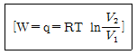
- 단열과정
- 등압과정
- 등온과정
- 등적과정
(정답률: 53%)
26. 공기가 표준 대기압하에 있을 때의 산소의 분압(㎜Hg)을 구하면?
- 128.8
- 159.6
- 176.4
- 185.3
(정답률: 43%)
27. 97℃로 유지되고 있는 항온조가 실내 온도 27℃인 방에 놓여 있다. 어떤 시간에 1000㎈의 열이 항온조에서 실내로 새어 나왔다고 하면, 다음 내용 중 맞는 설명은?
- 항온조속의 물질의 엔트로피 변화량은 -2.7㎈/K이다.
- 실내 공기의 엔트로피의 변화량은 3.3㎈/K이다.
- 이 과정은 비가역적이다.
- 이 과정중 엔트로피는 감소하였다.
(정답률: 43%)
28. 수증기 터빈을 출입하는 증기의 엔탈피가 각각 1000㎉/㎏, 1349㎉/㎏이다. 열손실은 수증기 ㎏당 5㎉이고 운동에너지와 위치에너지는 무시한다. 수증기 ㎏당 터빈이 한 일을 구하면?
- 344㎉
- -344㎉
- -349㎉
- 349㎉
(정답률: 65%)
29. 기체가 단열 팽창을 할 경우 실제의 엔트로피 변화는?
- 증가한다.
- 감소한다.
- 일정하다.
- 무관하다.
(정답률: 50%)
30. 다음 중 가스 터빈에 대한 이상적인 공기 표준사이클로서 정압연소 사이클은 어느 것인가?
- Stirling 사이클
- Ericsson 사이클
- Diesel 사이클
- Brayton 사이클
(정답률: 53%)
31. 열 펌프의 성능계수(coefficient of performance)를 나타내는 것으로 맞는 것은? (단, Q1 : 고열원의 열량, Q2 : 저열원의 열량, AW : cycle에 공급된 일)
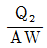
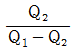
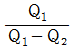
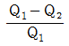
(정답률: 67%)
32. 압력 10㎏/cm2의 포화상태의 물이 증기트랩으로부터 압력 760㎜Hg의 대기 중에 방출될 때 포화 상태의 물 1㎏당 몇 ㎏의 수증기가 발생하는가? (단, 10㎏/cm2 포화수의 포화온도는 176℃이다.)
- 0.318
- 0.417
- 0.147
- 0.238
(정답률: 38%)
33. 다음 중 과열수증기(superheated steam)의 상태가 아닌 것은?
- 주어진 압력에서 포화증기 온도보다 높은 온도
- 주어진 체적에서 포화증기 압력보다 높은 압력
- 주어진 온도에서 포화증기 체적보다 낮은 체적
- 주어진 온도에서 포화증기 엔탈피보다 큰 엔탈피
(정답률: 60%)
34. 랭킨(Rankine) 사이클에서 복수기의 압력을 낮출 때 나타나는 현상으로 옳은 것은?
- 이론 열효율이 낮아진다.
- 터빈 출구의 증기건도가 낮아진다.
- 복수기의 포화온도가 높아진다.
- 복수기내의 절대압력이 증가한다.
(정답률: 63%)
35. 어느 밀폐계가 아래 온도에서 동일한 열량을 대기중에 방출하였을 때, 이 계(system)의 엔트로피 변화량이 가장 큰 것은?
- 30℃
- 50℃
- 100℃
- 200℃
(정답률: 64%)
36. -5℃와 35℃사이에서 작동하는 카르노사이클 냉동기의 성적계수는 얼마인가?
- 6.7
- 1.15
- 0.87
- 0.13
(정답률: 31%)
37. 200atm, 0℃의 공기를 1atm으로 줄-톰슨(Joule-Thomson)팽창시켰다면 최종 온도는? (단, 1atm의 평균 비열을 6.95cal/g.mol.℃로 하고, 200atm, 0℃의 엔탈피는 1⑤kcal/kg, 1atm, 0℃의 엔탈피는 116kcal/kg)
- -11℃
- -22℃
- -35.8℃
- -45.9℃
(정답률: 24%)
38. 임의의 과정에 대한 가역성과 비가역성을 논의하는데 적용되는 법칙은?
- 열역학 제 0법칙을 적용한다.
- 열역학 제 1법칙을 적용한다.
- 열역학 제 2법칙을 적용한다.
- 열역학 제 3법칙을 적용한다.
(정답률: 55%)
39. 표에 나타낸 특성치를 갖는 기체 0.1kmole의 온도를 298K에서 308K로 일정 압력하에서 증가시키는데 필요한 열은?
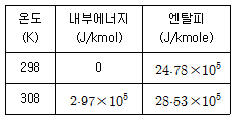
- 2.75 x 104J
- 2.917 x 104J
- 3.75 x 104J
- 4.325 x 104J
(정답률: 44%)
40. 다음 중 아래 압력의 포화수를 가열하여 동일 압력의 건포화증기로 만드는데 소요되는 증발열이 가장 큰 것은?
- 0.5kgf/cm2
- 1.0kgfcm2
- 10kgfcm2
- 100kgf/cm2
(정답률: 48%)
3과목: 계측방법
41. 가스 채취시 주의하여야 할 사항을 설명한 것이다. 틀린것은?
- 가스의 구성 성분의 비중을 고려하여 적정 위치에서 측정하여야 한다.
- 가스 채취구는 외부에서 공기가 잘 유통할 수 있도록 하여야 한다.
- 채취된 가스의 온도, 압력의 변화로 측정오차가 생기지 않도록 한다.
- 가스성분과 화학반응을 일으키지 않는 관을 이용하여 채취한다.
(정답률: 84%)
42. 다음 중 압력식 온도계가 아닌 것은?
- 액체 팽창식 온도계
- 기체식 온도계
- 증기압식 온도계
- 고체 팽창식 온도계
(정답률: 65%)
43. 다음 중 자동제어계와 직접 관련이 없는 장치는?
- 기록부
- 검출부
- 조절부
- 조작부
(정답률: 80%)
44. 오리피스에 의한 유량측정에서 유량은?
- 온도차에 비례한다.
- 온도차의 평방근에 비례한다.
- 압력차의 평방근에 비례한다.
- 압력차의 평방근에 반비례한다.
(정답률: 62%)
45. CC(Copper - Constantan) 열전 온도계의 고온 측정온도 범위로 맞는 것은?
- 200 - 300℃
- 400 - 750℃
- 650 - 1200℃
- 1400 - 1600℃
(정답률: 50%)
46. 벤츄리관 유량계의 특징 중 맞지 않는 것은?
- 압력손실이 적고 측정 정도도 높다.
- 구조가 복잡하고 대형이다.
- 레이놀즈수가 1⑤정도이하에서는 유량계수가 변화한다.
- 점도가 큰 액체의 측정에서도 오차가 발생치 않는다.
(정답률: 62%)
47. 정확한 온도정점을 구하기 위한 온도의 정의 정점 중에서 국제 실용온도 정의 정점에 해당되지 않는 것은?
- 물의 3중점
- 금의 응고점
- 산소의 비점
- 납의 응고점
(정답률: 53%)
48. 압력 측정에 사용되는 액체의 구비조건 중 잘못된 것은?
- 열팽창계수가 클 것
- 모세관 현상이 적을 것
- 점성이 작을 것
- 일정한 화학성분을 가질 것
(정답률: 67%)
49. 다음 열전대 온도계 중 가장 고온을 측정할 수 있는 온도계는?
- IC
- CC
- CA
- PR
(정답률: 79%)
50. 관로의 유속을 피토관으로 측정할 때 수주의 높이가 30cm였다. 이 때 유속은 몇 m/s인가? (단, 중력가속도(g)는 9.8m/s2으로 한다.)
- 4.88
- 5.88
- 6.88
- 7.88
(정답률: 62%)
51. 자동제어에서 미분동작이라 함은?
- 조작량이 어떤 동작 신호의 값을 경계로 하여 완전히 전개 또는 전폐되는 동작
- 조절계의 출력 변화가 편차에 비례하는 동작
- 조절계의 출력 변화의 속도가 편차에 비례하는 동작
- 조절계의 출력변화는 편차의 변화속도에 비례하는 동작
(정답률: 65%)
52. 다음 중 연소가스 통풍계로 사용되는 압력계는?
- 다이아프램식 압력계
- 벨로즈 압력계
- 링밸런스식 압력계
- 분동식 압력계
(정답률: 53%)
53. 관속을 흐르는 유체가 층류로 되려면?
- 레이놀즈수가 4000보다 많아야 한다.
- 레이놀즈수가 2100보다 적어야 한다.
- 레이놀즈수가 4000이어야 한다.
- 레이놀즈수와는 관계가 없다.
(정답률: 92%)
54. 다음 중 사하중계(dead weight gauge)의 용도는?
- 압력계 보정
- 온도계 보정
- 유체의 밀도측정
- 기체 무게측정
(정답률: 53%)
55. 교축 기구식 유량계에서 압력손실의 크기 순서로 맞는 것은?
- 벤츄리 ＜ 오리피스 ＜ 플로워-노즐
- 플로워-노즐 ＜ 벤츄리 ＜ 오리피스
- 벤츄리 ＜ 플로워-노즐 ＜ 오리피스
- 오리피스 ＜ 벤츄리 ＜ 플로워-노즐
(정답률: 27%)
56. 다음 중 세라믹식 O2계의 주원료는?
- CH4
- KOH
- ZrO2
- HCl
(정답률: 94%)
57. 경보 및 액면 제어용으로 널리 사용되는 액면계는?
- 유리관식 액면계
- 차압식 액면계
- 부자식 액면계
- 퍼지식 액면계
(정답률: 69%)
58. 단요소식 수위제어에 관한 설명 중 옳은 것은?
- 보일러의 수위만을 검출하여 급수량을 조절하는 방식이다.
- 발전용 고압 대용량 보일러의 수위제어에 사용되는 방식이다.
- 수위조절기의 제어동작은 PID동작이다.
- 부하변동에 의한 수위변화 폭이 대단히 적다.
(정답률: 83%)
59. 열전대의 냉접점에 관한 설명 중 틀린 것은?
- 냉접점의 온도가 0℃가 아닐때는 온도보정이 필요하다.
- 냉접점의 온도는 0℃로 유지한다.
- 냉접점과 계기 사이에는 동(Cu)선을 사용한다.
- 자동평형 계기에서의 냉접점은 0℃이하로 유지한다.
(정답률: 58%)
60. 자동제어 장치에서 조절계의 종류에 속하지 않는 것은?
- 전기식
- 수증기식
- 유압식
- 공기압식
(정답률: 67%)
4과목: 열설비재료 및 관계법규
61. 보온면의 방산열량 1100kJ/m2, 나면의 방산열량 1600kJ/m2일 때에 보온재의 보온 효율은?
- 25.0%
- 31.25%
- 45.45%
- 68.75%
(정답률: 64%)
62. 대부분의 보온재는 열전도율이 온도에 따라 직선적으로 증가하며λ= λo + mθ의 형으로 되나, -40℃ 부근에서 그 경향을 크게 벗어나는 보온재는? (단, λ : 열전도율, λo : 0℃에서의 열전도율, θ : 온도, m : 온도계수 이다.)
- 경질 우레탄 포옴
- 탄화 포옴
- 다포유리
- 탄화 코르크
(정답률: 56%)
63. 유체가 관내를 흐를 때 생기는 마찰로 인한 압력손실에 대한 설명 중 맞지 않은 것은?
- 유체의 흐르는 속도가 빨라지면 압력손실도 커진다.
- 관의 길이가 짧을수록 압력손실은 작아진다.
- 비중량이 큰 유체일수록 압력손실이 작다
- 관의 내경이 커지면 압력손실은 작아진다.
(정답률: 58%)
64. 다음 중 에너지이용합리화법의 제정 목적으로 틀린 것은?
- 에너지 소비로 인한 환경 피해를 줄이기 위해
- 에너지를 개발하고 촉진하기 위해
- 에너지의 수급안정을 기하기 위해
- 에너지의 합리적이고 효율적인 이용을 위해
(정답률: 65%)
65. 에너지이용합리화법에서 정의한 용어의 설명으로 틀린 것은?
- 열사용기자재라 함은 핵연료를 사용하는 기기, 축열식 전기기기와 단열성자재로서 산업자원부장관이 정하는 것을 말한다.
- 에너지사용기자재라 함은 열사용기자재 기타 에너지를 사용하는 기자재를 말한다.
- 에너지공급설비라 함은 에너지를 생산. 전환. 수송. 저장하기 위하여 설치하는 설비를 말한다.
- 에너지사용시설이라 함은 에너지를 사용하는 공장. 사업장 기타 시설과 에너지를 전환하여 사용하는 시설을 말한다.
(정답률: 61%)
66. 다음 중 관류보일러에 대해서 설명한 것으로 틀린 것은?
- 관계(管系)만으로 구성되어 있고 기수 드럼이 없는 보일러이다
- 관류보일러는 드럼이 없는 보일러로서 고압 대용량에 사용된다
- 보유수량이 현저하게 적기 때문에 부하변동시에도 압력은 일정하게 유지된다
- 관을 자유로이 배치할 수 있어서 전체를 컴팩트형 구조로 할 수 있다.
(정답률: 56%)
67. 다음 순환식 오일 배관의 특징 중 틀린 것은?
- 각 버너의 유압이 거의 균일하게 된다.
- 각 버너의 유온이 거의 일정하게 된다.
- 오일 배관 내벽에 슬러지가 부착되기 쉽다.
- 버너 시동전에 오일을 가열하는데 편리하다.
(정답률: 58%)
68. 다음 중 기수분리의 방법으로 맞지 않는 것은?
- 방향전환을 이용한 것
- 그물을 이용한 것
- 장애판을 이용한 것
- 압력을 이용한 것
(정답률: 43%)
69. 보일러 계속사용검사 유효기간 만료일이 9월 1일 이후인 경우 연기할 수 있는 기한의 범위는?(오류 신고가 접수된 문제입니다. 반드시 정답과 해설을 확인하시기 바랍니다.)
- 1월까지
- 2월까지
- 3월까지
- 4월까지
(정답률: 65%)
70. 터널요의 설명으로 맞는 것은?
- 예열, 소성, 냉각이 연속적으로 이루어지며 대차의 진행방향과 같은 방향으로 연소가스가 진행된다.
- 작업이 간편하고 조업주기가 단축되며, 요체의 보유열을 이용할 수 있어 경제적이다.
- 가마내의 온도분포가 균일하다.
- 온도조절의 자동화가 쉬우며, 제품의 품질, 크기, 형상등에 제한 받는다.
(정답률: 44%)
71. 산업자원부장관이 에너지저장의무를 부과할 수 없는 자는?
- 석유사업법에 의한 석유판매업자
- 연간 2만석유환산톤 이상의 에너지를 사용하는 자
- 석탄산업법에 의한 석탄가공업자
- 집단에너지사업법에 의한 집단에너지사업자
(정답률: 59%)
72. 다음 중에서 파형노통에 대한 설명으로 맞지 않는 것은?
- 열의 신축에 의한 탄력성이 나쁘다.
- 스케일의 생성이 쉽다.
- 제작비가 비싸다.
- 강도가 크다.
(정답률: 77%)
73. 에너지 관리대상자가 매년 1월 31일까지 관할 시∙도지사에게 신고하여야 할 사항에 해당되지 않는 것은?
- 전년도의 에너지사용량∙제품생산량
- 에너지 사용기자재의 현황
- 사용 에너지원의 종류 및 사용처
- 당해년도의 에너지사용예정량 및 제품생산 예정량
(정답률: 53%)
74. 유리면 보온재에 관한 설명으로 적당하지 않은 것은?
- 형상에 따라 보온판, 보온대, 블랭킷, 보온통으로 분류된다.
- 공조, 위생, 플랜트설비의 보온과 보냉에 사용되며 최고사용온도는 300∼350℃로 암면 보온재보다 높다.
- 유리원료를 용융하여 원심법, 와류법 및 화염법 등에 의해 섬유상태로 만들어진다.
- 강산화제와 강알카리를 제외하고는 내약품성이 좋으며 품질의 변화와 변형이 적어 수명이 길다.
(정답률: 75%)
75. 검사대상기기의 계속사용검사 신청은 검사 유효기간 만료 몇 일전까지 하여야 하는가?
- 3일
- 10일
- 15일
- 30일
(정답률: 58%)
76. 다음 중 단열의 효과로 볼 수 없는 것은?
- 축열용량이 커진다.
- 열전도도가 작아진다.
- 노내의 온도가 균일하게 된다.
- 노벽의 온도구배를 줄여 스폴링현상을 방지한다.
(정답률: 59%)
77. 샤모트(chamotte) 벽돌에 관한 설명으로 맞는 것은?
- 일반적으로 기공률이 크고 비교적 낮은 온도에서 연화되며 내스폴링성이 좋다.
- 흑연질 등을 사용하며 내화도와 하중연화점이 높고 열및 전기전도도가 크다.
- 내식성과 내마모성이 크며 내화도 범위는 SK 35 이상으로 주로 고온부에 사용된다.
- 내화도와 하중 연화점이 높고 염기성에 대한 저항이 크므로 염기성 제강로에 주로 사용된다.
(정답률: 56%)
78. 검사대상기기조종자업무 관리대행기관으로 지정을 받기 위하여 산업자원부장관에게 신청하여야 하는 서류가 아닌 것은?
- 장비명세서 및 기술인력 명세서
- 기술인력에 대한 자격을 증명할 수 있는 서류와 고용계약서 사본
- 법인등기부등본
- 향후 1년간 안전관리대행사업계획서
(정답률: 60%)
79. 다음 중 샤모트질계 내화물의 주성분은?
- 마그네사이트(MgCO3)
- 카올린(Al2O3.2SiO2.2H2O)
- 납석(Al2O3.4SiO2.H2O)
- 크로마이트(Cr2O3.FeO)
(정답률: 74%)
80. 다음 중 다이아프램 밸브(diaphragm valve)에 대한 설명과 거리가 먼 것은?
- 화학약품을 차단함으로써 금속부분의 부식을 방지한다.
- 기밀을 유지하기 위한 패킹을 필요로 하지 않는다.
- 저항이 적어 유체의 흐름이 원활하다.
- 유체가 일정이상의 압력에 다다르면 작동하여 유체를 분출시킨다.
(정답률: 58%)
5과목: 열설비설계
81. 노통보일러에 있어 원통 연소실 또는 노통의 길이 이음에 적합한 용접방법은?
- 필릿용접
- 플러그용접
- 맞대기 양쪽 용접
- 비트용접
(정답률: 65%)
82. 육용강제 보일러에 있어서 접시모양 경판으로 노통을 설치할 경우, 경판의 최소 두께(t㎜)를 구하는 옳은 식은? (단, P : 최고 사용압력(㎏fcm2), R : 접시모양 경판의 중앙부에서의 내면 반지름(㎜), σa : 재료의 허용 인장응력(㎏f/mm2), η: 경판자체의 이음 효율, A : 부식여유(mm))
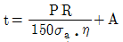
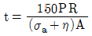
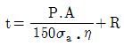
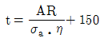
(정답률: 80%)
83. 수조비등에서 기포가 생성되면서 가열면의 열을 기화열로 흡수하므로 효과적인 열전달이 이루어지는 비등영역은 다음 중 어느 영역인가?
- 단상액체 자연대류
- 핵비등(nucleate boiling)
- 천이비등(transition boiling)
- 막비등(film boiling)
(정답률: 85%)
84. 68㎏/분(min)의 비율로 흐르는 물이, 비열 1.9kJ/㎏℃의 기름을 써서 35℃에서 75℃까지 가열될 때 두 유체는 향류 2중관 열교환기내에서 사용되고, 기름의 온도는 교환기에 들어올 때 110℃, 나갈 때 75℃이다. 이 때 대수평균온도차로서 가장 적합한 것은?
- 37℃
- 49℃
- 61℃
- 73℃
(정답률: 32%)
85. 연소가스량이 1500m3/min, 송풍기에 의한 압력수두가 10㎜Aq, 송풍기 효율이 0.6인 경우 송풍기 소요동력(ps)은?
- 2.23ps
- 5.56ps
- 8.56ps
- 10.23ps
(정답률: 65%)
86. 다음의 스케일 성분중 연질의 것은?
- 황산염 퇴적물
- 규산염 퇴적물
- 탄산염 퇴적물
- 수산염 퇴적물
(정답률: 58%)
87. 연돌의 통풍력에 대한 설명으로 잘못된 것은?
- 연돌이 높을수록 커진다.
- 외부 온도가 낮을수록 커진다.
- 연돌의 단면적이 클수록 커진다.
- 배가스 온도가 낮을수록 커진다.
(정답률: 59%)
88. 다음에 열거한 보일러 설치 검사 사항중 틀린 것은?
- 유류 보일러의 배기가스 온도는 정격 부하에서 상온과의 차가 315℃ 이하이어야 한다.
- 보일러의 안전장치는 사고를 방지키 위해 먼저 연료를 차단한 후 경보를 울리게 해야 한다.
- 수입 보일러의 설치검사의 경우 수압시험은 필요하다.
- 보일러 설치검사시 안전장치 기능 테스트를 한다.
(정답률: 87%)
89. 다음 보일러의 부속장치중 여열장치가 아닌 것은?
- 과열기
- 송풍기
- 재열기
- 절탄기
(정답률: 91%)
90. 다음 중 ppm 단위로서 틀린 것은?
- ㎎/㎏
- g/ton
- ㎎/ℓ
- ㎏/m3
(정답률: 53%)
91. 보일러동의 외경이 800mm이고 길이가 2500mm인 랭카셔 보일러의 전열면적은?
- 6.3m2
- 8.0m2
- 2.0m2
- 4.8m2
(정답률: 45%)
92. 다음 중 부식 요인으로서 적절치 못한 것은?
- 이온화 반응
- 전지작용
- 용존가스
- 가성취화
(정답률: 95%)
93. 해수마그네시아 침전반응을 알맞게 표현한 화학반응식은?
- CaCO3 + MgCO3 →CaMg(CO3)2
- CaMg(CO3)2 + MgCO3 →2MgCO3 + CaCO3
- MgCO3 + Ca(OH)2 →Mg(OH)2 + CaCO3
- 3MgO.2SiO2.2H2O + 3CO3 →3MgCO3 + 2Si02 + 2H2O
(정답률: 79%)
94. 관 스테이의 최소 단면적을 구하려고 한다. 이 때 적용할설계 계산식은? (단, S : 관 스테이의 최소 단면적(mm2), A : 1개의 관 스테이가 지시하는 면적(cm2), a : A 중에서 관구멍의 합계 면적(cm2), P : 최고 사용 압력(㎏/cm2))
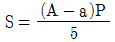
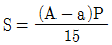
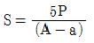
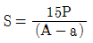
(정답률: 71%)
95. 열전도율(계수)이 0.9㎉/m.h.℃인 재질로 된 평면벽의 양측 온도가 800℃와 100℃이다. 이 벽을 통한 단위면적당 열전달량이 1400㎉/m2h일 때 벽 두께는 몇 ㎝인가?
- 25
- 35
- 45
- 55
(정답률: 71%)
96. 정류탑중의 하나인 포종탑(bubble cap)의 장점에 대한 설명이 아닌 것은?
- 탑내 청소가 용이하다.
- 정체량이 적다.
- 처리능력에 융통성이 있다.
- 대규모 증류에 적합하다.
(정답률: 46%)
97. 랭카샤 보일러에 대한 설명으로 그 내용이 제일 부적합한 것은?
- 노통이 2개이다.
- 노내 온도의 급강하가 적다.
- 같은 지름의 코르니쉬 보일러와 비교해보면 전열면적이 크다.
- 수면의 높이는 노통 꼭대기 위에서 노통길이의 1/3이 되게 한다.
(정답률: 56%)
98. 보일러 급수의 탈기방법중 물리적 방법에 대한 설명으로 가장 적합한 것은?
- 산소와 같은 용해가스를 제거하는 탈기기를 통과시켜 기체를 분리한다.
- 물을 고압 용기속에 분무시켜 압력차로 인해 기체를 분리한다.
- 기체를 파이프중에서 모아 공기로 방출되게 한다.
- 휘발 성분을 섞어 공기와 같이 방출되게 한다.
(정답률: 65%)
99. 연소실에서 연도까지 배치된 보일러 부속 설비의 순서를 바르게 나타낸 것은?
- 절탄기 - 과열기 - 공기 예열기
- 과열기 - 절탄기 - 공기 예열기
- 공기 예열기 - 과열기 - 절탄기
- 과열기 - 공기 예열기 - 절탄기
(정답률: 78%)
100. 단열변화에서 엔트로피의 변화량은 어떻게 되는가?
- 증가한다.
- 감소한다.
- 불변이다.
- 일정하지 않다.
(정답률: 69%)